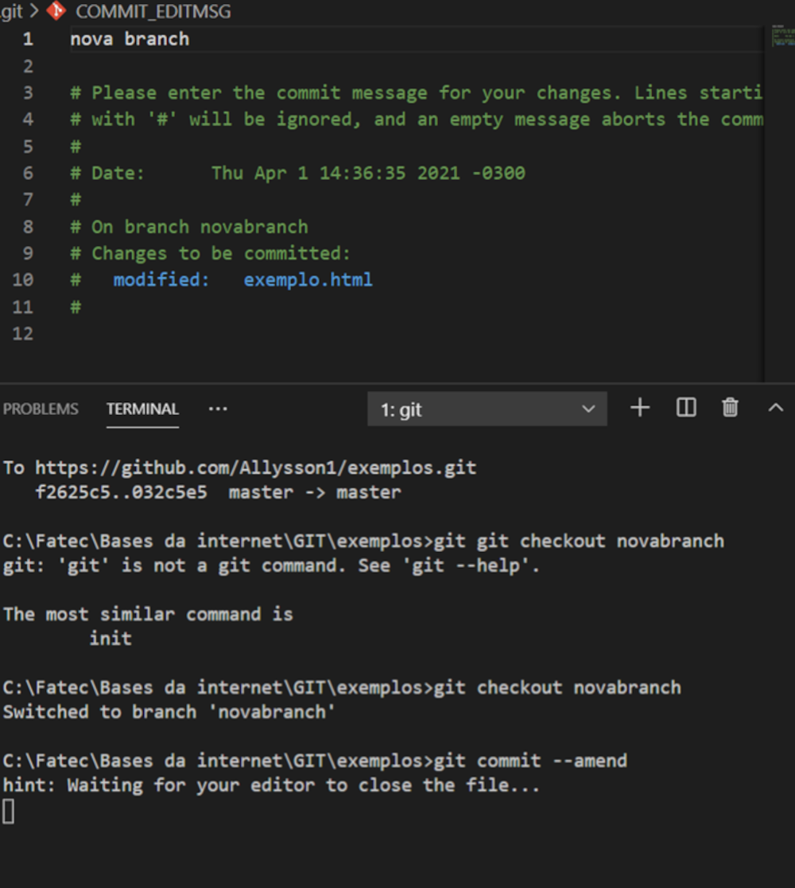

Como arrumar uma mensagem errada em um commit.
Na linha de comando, vá para o repositório que está com o commit errado e ensira o seguinte comando: “Git commit - - amend” e pressione Enter., quando o editor de texto abrir, arrume a mensagem do commit e salve o mesmo.
Fonte: https://docs.github.com/pt/github/committing-changes-to-your-project/changing-a-commit-message#:~:text=Na%20linha%20de%20comando %2C%20navegue,incluindo%20um%20trailer%20no%20commit.